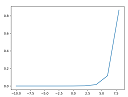

ソフトマックス関数
ソフトマックス関数は配列の数値を0～1の値に変換する。
また変換後の合計は1になる。
import numpy as np
import matplotlib.pyplot as plt #グラフ描画ライブラリ
def softmax(x):
c = np.max(x)
exp_x = np.exp(x - c)
sum_exp_x = np.sum(exp_x)
y = exp_x / sum_exp_x
return y
x = np.arange(-10,10,2); #-10から10まで2刻みの配列を作成する
y = softmax(x)
print(x)
#ｙの総和は1になる
print(y)
print(np.sum(y))
# グラフ描画
plt.plot(x,y)
plt.show()
出力
[-10 -8 -6 -4 -2 0 2 4 6 8]
[ 1.31688261e-08 9.73051952e-08 7.18993546e-07 5.31268365e-06
3.92557175e-05 2.90062699e-04 2.14328955e-03 1.58368867e-02
1.17019645e-01 8.64664719e-01]
1.0
